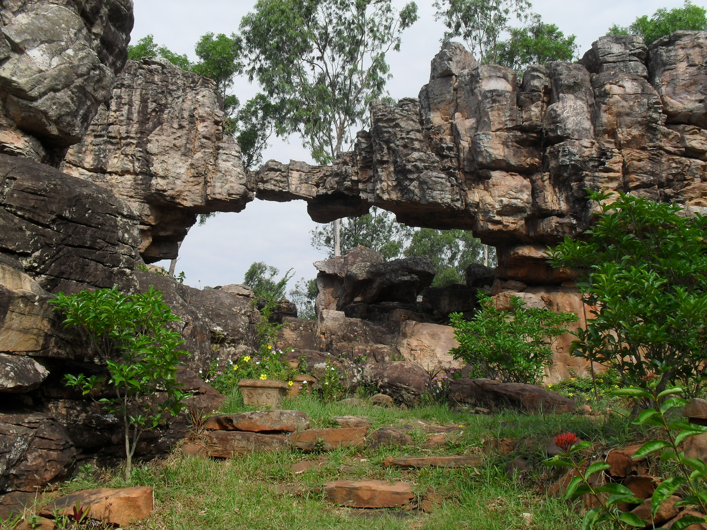
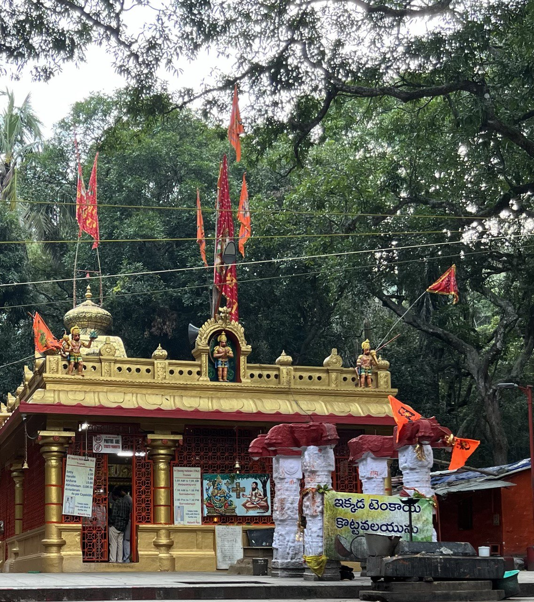
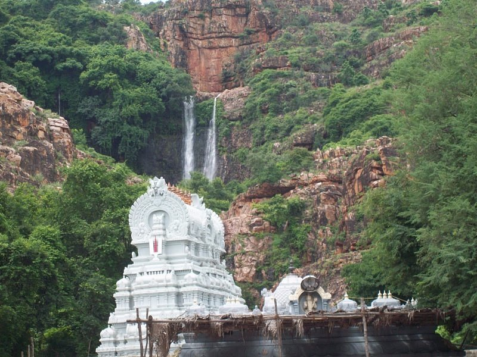
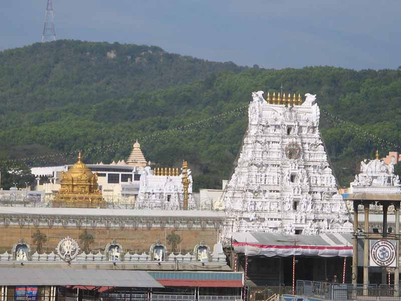

<html>
    <head>
        <link rel="stylesheet" href="style.css">
        <link rel="preconnect" href="https://fonts.googleapis.com">
        <link rel="preconnect" href="https://fonts.gstatic.com" crossorigin>
        <link href="https://fonts.googleapis.com/css2?family=Playfair+Display:ital,wght@0,400..900;1,400..900&family=Space+Grotesk:wght@300..700&display=swap" rel="stylesheet"></head>
    </html>
    <body>
        <div id="firstpart">
            <h1 class="topsec">Visit Tirumala</h1>
            <h2 class="topsec">Let us surrender ourselves to the divine power of Lord Venkateswara.</h2>
        </div>
        <div id="secondsec">
            <h2>Top three places to visit in Tirumala</h2>
            <div class="places">
                <div class="places1">
                    <div class="specific">
                        
                        <h3>Silathoranam</h3>
                        <p class="paragraph">The rock garden arch is naturally compared to the divine serpent Adishesha.</p>
                    </div>
                    <div class="specific">
                        
                        <h3>Japali Teertham</h3>
                        <p class="paragraph">Japali Teertham is dedicated to Lord Hanuman and is situated amidst dense forests.</p>
                    </div>
                    <div class="specific">
                        
                        <h3>Sri Kalipeswara Temple</h3>
                        <p class="paragraph">Kapil Teertham is an ancient Shiva temple inside a cave located conveniently at the foothills of Tirumala.</p>
                    </div>
                </div>
                <div class="places2">
                    <!-- <div class="specific">
                        
                        <h3>Srivari Padalu</h3>
                        <p class="paragraph">It is believed that this is the place where Lord Narayana first set his feet when he came down from Vaikuntam.</p>
                    </div>
                    <div class="specific">
                        
                        <h3>Lord Venkateswara Temple</h3>
                        <p class="paragraph">The temple of Venkateswara was built by Thondaman king and reformed periodically by Cholas, Pandyas and Vijayanagar.</p>
                    </div> -->
            </div>
        </div>
        </div>
        <div id="thirdsec">
            <div class="card">
                
                <div>
                  <h3>Your guide</h3>
                  <p>Hi, I'm Anji🐵. I've lived in the forest of Sheshchalam for 3 months and explored this place alot, so I can show you all of it's best parts and hidden secrets.</p>
                  <h4>Chittor, Andhra Pradesh.</h4>
                </div>
            </div>
        </div>
        </div>
    </body>
</html>